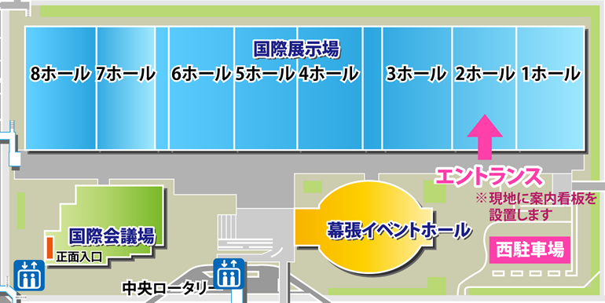
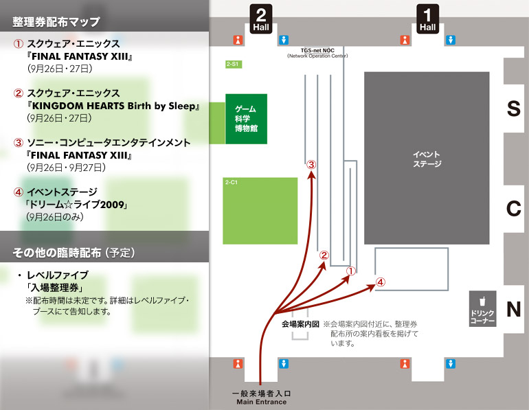

ご来場の皆さまへ
東京ゲームショウ2009の一般公開日の開場時間を最大30分前倒し（9時30分～）します。
東京ゲームショウ2009の一般公開日（9月26日、27日）は、近隣で大型イベントが同時開催されることから、朝の混雑回避のために開場時間を最大で30分前倒しいたします。
従いまして、入場ゲートの開門は午前9時30分から午前10時の間に行います。ご来場の際はご注意ください。
「TGS2009サポーターズクラブ」チケットをお持ちの方へ 開場時間が30分前倒しに
東京ゲームショウ2009の一般公開日（9月26日、27日）の開場時間が最大で30分前倒しされることに伴い、優先入場の開始時間も実際の開場時間に合わせて同時にスタートとなります。
JR海浜幕張駅の始発到着時間から、「TGS2009サポーターズクラブ」チケットをお持ちの方の入場待機列を設置します。待機列設置場所は幕張メッセ2ホール北側の西駐車場近辺となります（図参照）。一般入場券の方とは一部入場ルートが異なりますので、ご注意ください。開場時間になりましたら順次優先入場レーンからご入場いただきます。詳しくは当日、会場の案内看板をご確認ください。
※入場にあたり、まず専用受付でチケットの確認などを行った後に、優先入場レーン（開場前は優先入場レーン待機列）にお進みいただきます。一般の入場待機列とは異なりますので、ご注意ください。

整理券配布所の利用方法について
東京ゲームショウ2009事務局では、場内の混雑緩和、危険防止のために、下記の出展ゲームタイトル体験、イベントステージ入場に関する整理券を、開場時間より配布いたします。

【配布時のご注意】
- 整理券の配布は9月26日（土）、27日（日）の一般日のみ、各日実施いたします。
- 会場入口近辺に、配布所入場の入口がございますので、走らずにゆっくりとお進みください。
- 整理券配布の列は各ゲームタイトル・イベント専用となります。ご希望のゲームタイトル・イベントの列にそれぞれお並びください。
- お並びいただいた配布列は、専用の列となりますので、他の列でお配りしている整理券の配布は行いません。
- 整理券はいかなる理由でも、お一人様1枚のみの受け渡しとなります。
- 整理券はそれぞれに記載された日時のみ有効となります。日時の変更、整理券の交換はお受けできません。
- 各日1日分の整理券を配布いたします。無くなり次第終了となりますのでご了承ください。
会場の混雑緩和、混乱防止のため、ご来場の皆様のご協力お願いいたします。
公式ガイドブック掲載内容のお詫びと訂正
「東京ゲームショウ2009 オフィシャルガイドブック」の出展カタログページにおきまして、以下の誤りがございました。
御来場者、関係者の皆様にお詫びして訂正いたします。
コーエーテクモホールディングス（16ページ）
誤）金色のコルダ
正）金色のコルダ３
以上、訂正してお詫びいたします。